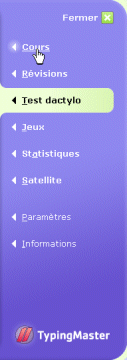

Vous pouvez faire n'importe lequel des tests disponibles ou utiliser votre propre texte. Apres avoir compléter le cours, effectuez à nouveau le même test pour voir vos progrès.
Pour effectuer un test dactylographique, cliquez sur le bouton « Test dactylo » dans le menu du programme sur la droite.
Pour revenir à la leçon après le test dactylo, cliquez sur « Cours » dans le menu du programme. Vous recommencerez depuis la leçon et l'exercice ou vous vous êtes arrêté la dernière fois.